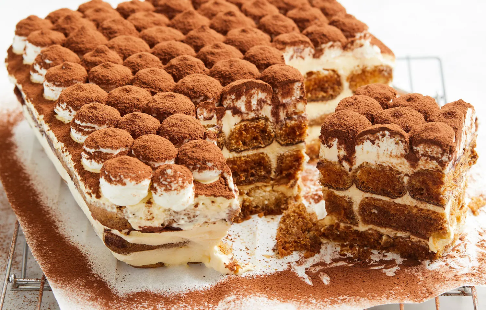

Tiramisu
30 Min.
Normal
14.11.2023
- 500 gr Mascarpone
- 100 gr Puderzucker
- 200 gr Löffelbiskuits
- 4 Eigelb
- 2 Eiweiß
- 3 Tassen gekochter Kaffee
- 2 EL Amaretto
Zubereitung
30 Minuten
30 Minuten
Eigelb, und Puderzucker weiß-schaumig schlagen. Amaretto unterrühren. Mascarpone vorsichtig unterrühren. Nicht mit dem Mixer, sonst wird die Masse flüssig. Lieber einen großen Schneebesen oder Kochlöffel benutzen. Das Eiweiß zu steifem Schnee schlagen und unterheben.
Löffelbiskuits kurz in kalten Kaffee tunken und auf Küchenpapier etwas abtropfen lassen.
Eine Lage Creme in eine Form geben, darauf eine Lage Biskuits usw.
2–4 Stunden (am besten sogar über Nacht) kalt stellen, kurz vor dem Servieren mit Kakaopulver bestreuen.
Ist wirklich so gut wie beim Italiener!
Rezept erstellt von